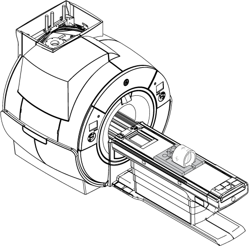
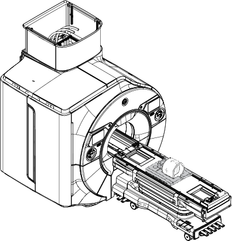
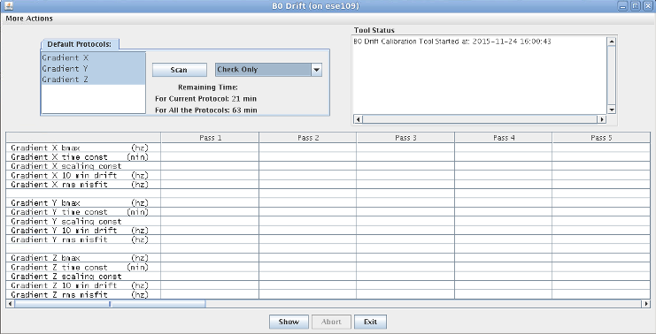

All other applicable calibrations must be complete.
About this task
Unwanted changes in the main magnetic field strength can occur when the spatially uniform field component is altered for a short term, during the process of scanning, or when the spatially uniform field component is permanently altered. This is known as short-term B0 drift.
This functional check confirms if the B0 drift values are within the system specification or not.
Topic ID: id_SL14006528-1178738
System Cooling Before Test
About this task
It is required to cool down the system without any scan for two hours before starting B0 Drift Test.
Procedure
To keep the system cooling power activated, perform [Start Exam].
Note: No phantom is required since actual scan won’t be performed.
Enter [New Exam].
Enter Patient ID and weight.
Select any protocol and save.
Select Start Exam.
Wait 2 hours before start testing, then select [End Exam].
Topic ID: id_SL4193626-1178738
Using B0 Drift Tool
Procedure
Place the TLT phantom and sphere on the flat table. Position the phantom in the center of the cradle and center it on the PA coil. To achieve the best test measurement, the phantom must be located in the center (long direction) of the cradle (landmark the center of phantom at 1080 mm from Home Position).
Note: This image is a representative example. Actual systems may vary.
Figure 1. TLT Phantom and Sphere on Table


Landmark on the Body TLT Loader crosshairs and press Advance to Scan.
Start the B0 Drift tool:
(For proprietary service tools) Make sure the Class M service key or Class C soft license is installed.
From the Calibration menu, select Calibration Wizard, and then select Click here to start this tool. The Calibration Wizard starts.
Select B0 Drift Calibration from the menu. Review and approve the pre- and post-dependencies, and then select Click here to start this tool.
(For non-proprietary service tools) From the Common Service Desktop, select Calibration > B0 Drift Calibration. Select Click here to start this tool.
The B0 Drift window appears.
Figure 2. B0 Drift Window in Test Mode with X, Y, and Z Axes Highlighted

Select the axis that is being validated. To select a second axis, press Shift and click another axis.
Select Check Only.
Note:(For PX25.0 systems) Select Test Mode.
The total time required to run B0 Drift Check Only Mode is 63 minutes.
Click Scan.
When the test is complete, it displays the compensated drift rate for the selected axis. Green values indicate pass, and red values indicate fail.